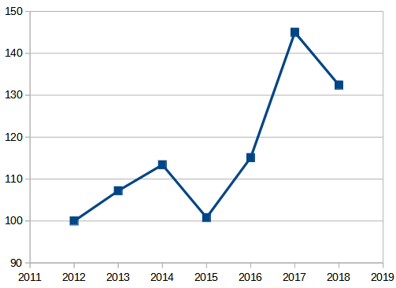
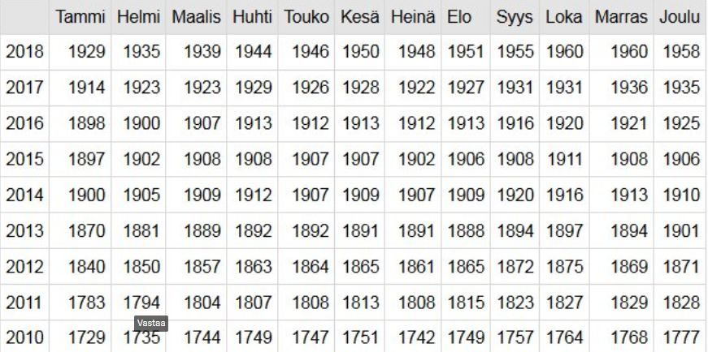

Indeksit ja rahan arvo
Contents
Indeksit ja rahan arvo#
Indeksi on luku, jolla pyritään ilmaisemaan tutkittavan asian muutosta.
Indeksisarjalla voidaan tutkia esimerkiksi tuotteen hinnan kehitystä.
Indeksisarja laaditaan niin, että valitaan perusajankohta, johon muiden ajankohtien arvoa verrataan.
Perusajankohdan arvoa eli ns. perusarvoa merkitään luvulla 100.
Indeksisarjan muut arvot saadaan jakamalla kukin arvo perusajankohdan arvolla ja kerrotaan lopuksi luvulla 100.
Saadut luvut ovat indeksiarvoja eli pisteitä, jotka yleensä ilmoitetaan yhden desimaalin tarkkuudella, ilman yksikköä.
Indeksin muodostaminen#
Esim. Muodostetaan indeksi kirjolohen kilohinnasta ao. taulukon perusteella.
Vuosi |
Kirjolohen hinta €/kg |
|---|---|
2012 |
8.43 |
2013 |
9.04 |
2014 |
9.56 |
2015 |
8.50 |
2016 |
9.70 |
2017 |
12.22 |
2018 |
11.16 |
Indeksi voitaisiin nimetä seuraavasti: kirjolohen hintaindeksi 100 = 2012” (perusvuodeksi valittu 2012)
Lasketaan muiden vuosien indeksit jakamalla niiden hinnat perusvuoden hinnalla ja kertomalla osamäärä luvulla 100.
\(I_n = \frac {H_n}{H_0}\cdot 100 \) , missä \(H_n\) ja \(H_0\) ovat vuoden n ja perusvuoden 2012 hinnat. Esim. vuoden 2014 indeksiluku on 9.56/8.43*100 = 113.4.
Saadaan seuraava indeksitaulukko.
Vuosi |
Kirjolohen hinta €/kg |
|---|---|
2012 |
100.0 |
2013 |
107.2 |
2014 |
113.4 |
2015 |
100.8 |
2016 |
115.1 |
2017 |
145.0 |
2018 |
132.4 |
Indeksi voidaan esittää myös graafisesti:

Laske indeksitaulukosta, kuinka monta prosentti kirjolohen hinta nousi välillä 2014 - 2017
Hintasuhde \(\frac {145}{113.5} = 1.279\%\) , mikä tarkoittaa 27.9 prosentin hinnannousua
Tunnettuja indeksejä
Tärkeitä indeksejä ovat mm. elinkustannusindeksi (EKI), joka mittaa inflaatiota ja ansiotasoindeksi, joka mittaa palkansaajien ansioiden kehitystä.
Osakesijoittajat seuraavat pörssikurssien kehitystä mittaavia indeksejä kuten Nasdaq ja Dow Jones
Elinkustannusindeksi#
Monet etuudet, kuten toimeentulotuki ja kansaneläke, on sidottu elinkustannuksia mittaavaan elinkustannusindeksiin. Alla taulukko EKI:stä, jossa perusvuotena on 1951. Ao. taulukossa on indeksin arvo vuosina 2010 - 2018.

Paljonko elinkustannukset nousivat vuoden 2011 tammikuusta vuoden 2016 tammikuuhun?
Indeksien suhde on \(\frac {1898}{1783} = 1.064\) , mikä tarkoittaa 6.4 prosentin nousua elinkustannuksissa.
Rahan arvo#
Rahan arvolla tarkoitetaan sitä, kuinka paljon samalla nimellisellä rahamäärällä saa tuotteita eri ajankohtina.
Esim. jos kirjolohen hinta nousee 15 prosenttia tietyllä rahamäärällä x euroa saatava kilomäärä laskee määrään joka saadaan jakamalla alkuperäinen kilomäärä luvulla 1.15.
Yleisesti. Kun elinkustannukset nousevat p prosenttia , eli korkokerroin on 1+p/100, niin rahan arvo alenee kertoimen käänteisluvulla
Jos a on alkuperäinen rahan arvo ja p on elinkustannusten muutosprosentti, niin
muuttunut rahan arvo on \(\frac {a}{1 +\frac{p}{100}}\)
Miten rahan arvo muuttuu, kun inflaatio on 7 prosenttia?
Korkokerroin elinkustannuksissa on 1.07, joten muuttunut rahan arvo on
\(\frac {a}{1.07} = 0.935 a\)
Rahan arvo on 93.5 prosenttia edellisen vuoden arvosta, eli se on laskenut 6.5 prosenttia
Ansiotasoindeksi#
Ansiotasoindeksi mittaa palkansaajien nimellisansioiden kehitystä.
Ansiotasoindeksissä 100 = 1961 vuoden 2011 indeksi on 2820 pistettä ja vuoden 2016 indeksi 3115 pistettä. Kuinka monta prosenttia ansiot nousivat ko. aikavälillä.
Indeksilukujen suhde on \(\frac {3115}{2820}= 1.105\%\) , joten ansiot nousivat 10.5 prosenttia.
Vastaus: 10.5%
Reaaliansiot ja palkansaajien ostovoima#
Reaaliansioita mittaa se, kuinka paljon käytettävissä olevalla rahalla saa tuotteita.
Reaaliansioita kuvaa käytettävissä olevan rahamäärän ja hintojen suhde.
Muodollisesti voitaisiin merkitä \(RA = \frac{A}{H}\) , missä A = ansiotulot, H = Hinnat
Kuinka paljon muuttuivat reaaliansiot 2011- 2016, jos hinnat nousivat 6.4% ja palkat 10.5% ?
Uusi reaaliansio (2016) on \(\frac {1.105A}{1.064H}= \frac {1.105}{1.064}\cdot\frac {A}{H} = 1.039\frac {A}{H}\)
Reaaliansiot nousivat siis 1.039
Ts. Reaaliansioiden korkokerroin = ansiotason korkokerroin / elinkustannusten korkokerroin
Työeläkkeiden korotus lasketaan EKI:stä ja palkkaindeksistä painotettuna keskiarvona#
Työeläkkeitä tarkistetaan joka vuoden alussa prosentilla, joka on elinkustannusten nousuprosentin ja palkkojen nousuprosentin painotettu keskiarvo painokertoimille 80% ja 20%
Esim. Kun palkat nousevat 10.5% ja elinkustannukset 6.4% jonakin aikavälinä, niin
eläkkeiden nousuprosentti on \(0.8*6.4\% + 0.2*10.5\% = 7.2 \%\)